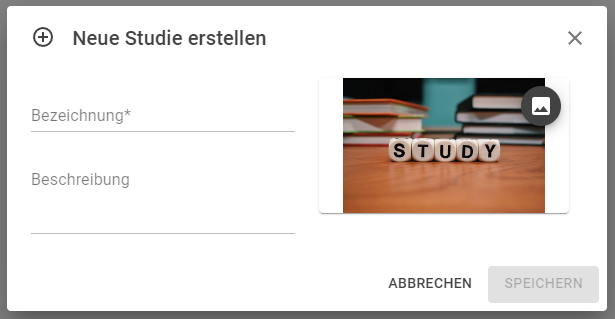
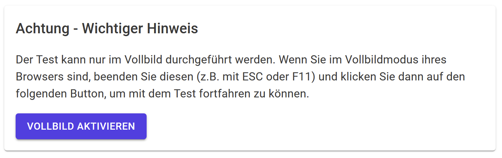
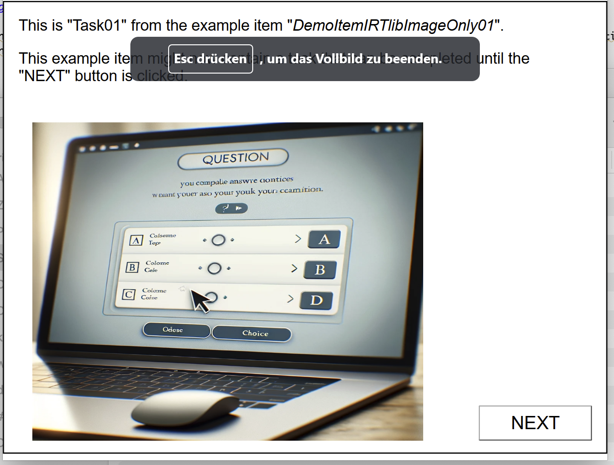
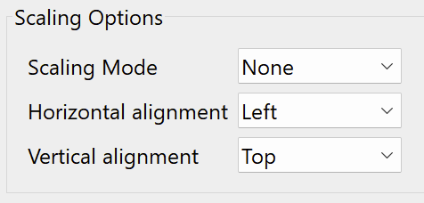
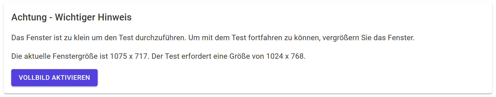
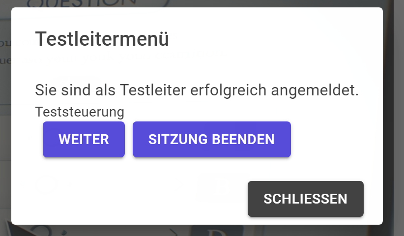

4 Vorbereitung Studien / Preparation Studies
Configurations that are created with the IRTlib editor are summarized in so-called studies. A study is intended to summarize the assessment content that is administered in a survey or session.
4.1 Study administration
After starting the IRTlib Editor, the Studies view is displayed. In this view, the first step to prepare a new configuration is to add a new study:
The created studies appear as cards in the Studies view. Note that the order in which the studies are displayed in the Study view does not matter.
Detailed instructions on how to create a study can be found here in the embedded help:
4.2 Studies
The IRTLib Editor is used to create configurations for studies, which can then be used in an IRTLib Player to carry out computer-based assessments.
4.2.1 How do I get started?
To start configuring a study, click on the plus icon at the bottom right:

Then enter a name and optionally a description in the Create new study dialog.
Make sure that only letters (upper and lower case), numbers and a _ are allowed for the name.

Then click on Save.
If required, you can also assign an image to a study using the following icon. This image is used in the IRTLib Editor for this study:

4.2.2 What’s next?
Created studies are displayed as tiles in the study overview:

To continue with the creation and configuration of a study, click on the small edit icon:

4.3 Further functions and notes
- Delete study: You can also delete studies using the recycle bin icon. The deletion of studies cannot be undone:

- Change language: The menu item Settings takes you to the item General settings, where you can change the language of the IRTLib Editor.

This item also gives you access to the CBA ItemBuilder Runtimes available in the IRTLib Editor (support for the use of CBA ItemBuilder content created with different versions of the program).
4.4 Basic configurations
The configurations of a particular study, including versioning and publishing, are managed within studies (i.e. after opening a study for editing by clicking on the edit icon at the bottom right of the card).
Created studies that are displayed in the IRTlib Editor in the Studies view can be opened for editing.

Detailed information on the basic configuration of a study can be found here in the embedded help:
4.5 Study Configurations
Name: What should the study be called? Make sure that only letters (upper and lower case), numbers and a
_are allowed for the name.Description: This optional field is provided so that you can enter a detailed description of the study. Special characters and umlauts etc. can also be entered here.
Activate routing for survey parts: Studies consist of one or more survey-parts.The survey-parts are administered as a linear sequence by default.If the option Enable routing for survey-parts is selected, the order of the survey-parts can be defined with Blockly-based routing. This enables dynamic sequences of survey-parts, whereby Call Parameters of the study can also be used, for example, to assign different sequences.
Check screen size: (description follows)
4.6 Access to studies (login)
The IRTlib software supports various ways in which people (test participants, respondents, …) can authenticate themselves for an assessment. The configurations include two aspects:
- Login mode: Is access required (login, login+password, passphrases/token) or not? And if credentials are required, what are valid values?
- Login source: How is the login information retrieved (direct input on the platform, CBA ItemBuilder item, ….) or passed (login parameter or call parameter)?
Detailed information on the configuration of the login of a study can be found here in the embedded help:
4.6.1 Configuration of the login
In the Login section, you can configure how test participants who start an assessment (either by calling up a link in a browser that refers to the online IRTlib player or by starting the offline IRTlib player) are to be identified or authenticated.
Login mode: The IRTlib software supports different Login modes.
Random identifier: When a session is started for the first time, an identifier is generated in this login mode. This random but unique character string (a so-called UUID, i.e. a Universally Unique Identifier) is used as a personal identifier in all data (i.e. result data) and all other stored data (e.g. log data/trace data, snapshot data, etc.).
Username: If test participants are expected to identify themselves by a unique string (e.g. a number or text used as an access identifier), a study can be configured with the login mode username. Access to the assessment is then only possible if the character string entered as username is valid.The underlying idea is that the study configuration is loaded with a list of valid usernames and that a test participant must enter a valid username before he or she can start the assessment. Only authenticated test takers can access the assessment content defined as Study and answer the tasks or questions.
User name and password: If not only valid usernames but also a password are to be used in a study to authenticate test takers, the login mode username and password allows a username and password to be entered. Analogous to username, both pieces of information must then be stored in the study configuration.
Access token: If the valid user names are not to be saved in the study configuration, the option Access token* can be used. Each token that corresponds to a defined schema is then accepted and used as an identifier for the test participants.
Storage for session data**:In the case of online deliveries, an assessment can be continued after an interruption. This functionality is also required, for example, if the page is reloaded in the browser (e.g. by forcing a Reload/F5, or by closing and reopening the URL). To ensure that sessions originating from the same person (i.e. from the same browser) can also be continued, the software can be configured so that the identifier is saved in the client.
Valid values: The IRTlib software provides the following credential validation mechanisms for the login modu username, username + password and access token:
List: A list of valid credentials (username or username and password, depending on the login mode configuration) can be defined as part of the study configuration.The information can either be edited in the IRTlib editor or imported from a CSV file.Defined values can also be exported as a CSV file.
Code for checking:A Blockly function can be specified, which returns True if the transferred login data is valid (otherwise False).
Group login: Depending on the Login mode, user name or access token serve as person identifier.If the Group login option is activated, these transferred login data are used for authentication to identify the test participant as a member of a group (i.e. only test participants who know the user name can authenticate themselves as part of the group). An additional random identifier is then generated within the group to distinguish different people from a group.
Login source: The IRTlib software supports various possible options for how login credentials can be provided.
Platform: A login dialog is displayed by the IRTlib player (i.e. the platform). The heading for entering the access data, the labeling of the input for user name and password, the labeling of the Next button, your welcome text and an instruction text as well as an error text for failed login attempts can be configured.
Parameters: Valid login data for test participants can also be provided via the command line (i.e. parameters when calling the offline version of the IRTlib Player) or via URL parameters (i.e. parameters when calling the study via a link to an online version of the IRTlib Player). In this case, no login dialog or login item is displayed.
Item: As an alternative to an IRlLib Player dialog, a CBA ItemBuilder task can also be configured, which serves as a login input mask. Within the item, a so-called ExternalPageFrame is used to send a specific JavaScript command to the IRlLib-Player to validate an input (an example can be found here).
The login item must be available as a CBA ItemBuilder project file for the configured runtime environment (runtime) and added to the study configuration. To add a login item to the study configuration, the integrated import dialog can be used.More information on importing CBA ItemBuilder projects can be found in the help for the Items section of a Survey part.
Additional parameters: In addition to the authentication of test participants, the login information can also be stored in the IRTlib software as an additional parameter, which can then be used in the flow control, for example.
Parameters for file names: The
RawDataPath(i.e. the relative path under which the offline IRTlib player saves the results data) and theMonitoringFile(i.e. the name of the file in which the offline IRTlib player writes information for study monitoring) can be configured as part of the login data.Blockly variables: Additional parameters can also be stored as so-called preload variables with the login information.
| Login mode | Storage for session data | Group login | Valid values | Login source | Additional parameters |
|---|---|---|---|---|---|
| Random indictor | yes | no | no | none | no |
| username | yes | yes | list or code | platform, item + parameter | values or parameter |
| username and password | yes | yes | list or code | platform, item + parameters | values or parameters |
| access token | yes | yes | scheme or code | platform, item + parameters | parameters |
4.7 Display of assessment content
Studies can define how the CBA ItemBuilder content is to be displayed. The settings in the Display section can relate to the scaling and alignment of the content as well as the behavior of the IRTlib Player application.
Detailed information on configuring the Display of a Study can be found here in the embedded help:
4.7.1 Display settings
Selected options are available for configuring the display, which relate to the presentation of the assessment content and the use of CBA ItemBuilder content, which is created with a defined aspect ratio (width and height).#### Window mode
In the Window mode selection, you can configure whether an additional window is displayed in the IRTlib Player. The configuration is implemented differently depending on the environment:
- Window:In this window mode, a regular program window is used in the offline IRTlib Player, in the online IRTlib Player the assessment content is displayed in the normal browser area, and the address bar and navigation buttons of the browser are visible in this mode.

- Full screen:The offline IRTlib Player starts directly in full screen mode if this option is configured.This is also associated with a Kiosk mode, i.e. access to other programs and the (accidental) termination of the program is only possible via the Task Manager.If a test administrator, for example, is to be able to end the test, a Test administrator menu must be configured.
The online IRlLib Player can also display assessment content in full-screen mode if this option is selected.If full screen mode is exited in the browser, the assessment content is then hidden.As it is not possible to automatically switch to full-screen mode in a browser, the target person first sees the following message from the platform:

By clicking on the button Activate full screen the full screen mode is started and the assessment content is then displayed without window frames and navigation areas of the browser.For a short time, the browser then typically displays a message that the full screen mode can be ended again with
Esc.

Note that this function is only available in browsers that support full screen mode (especially on older mobile devices, full screen mode is not fully supported; see for details e.g. on caniuse.com).
- Full screen, if supported:In this mode, the assessment in the online IRTlib Player is only displayed in full-screen mode if the browser supports full-screen mode. However, the content of the computer-based assessment is displayed in windowed mode when a study is delivered online and a browser that does not support full screen mode is used.For the IRlLib Player offline, this configuration is identical to full screen.

- Debug:This mode allows access to the browser’s developer tools during test execution, which are intended for debugging by software developers.
If the offline IRTlib Player is started with a study that has the Debug entry configured as Fixed mode, the so-called developer tools (DevTools) can be called up via the right mouse button during the task presentation.>

4.7.2 Scaling and alignment
Assessment content created with the CBA ItemBuilder is created for a specific size in pixels (width times height).The content can then be scaled for display on devices with different screen sizes and screen resolutions.In the CBA ItemBuilder, the options under Scaling Options are therefore available in the Preview:

Analog settings can be made in the IRTlib Editor.
Scaling: Setting how content should be adjusted if the available space and size of the items differ (Scaling Mode).
None*:The content is displayed without adaptation to the available window or screen size (corresponds to
None).Scale up*:Content is enlarged so that the available space is utilized (corresponds to
Up).downscale*: Content is reduced in size so that it fits on the screen/in the window (corresponds to
Down).Window size:Content is enlarged and reduced (corresponds to
Both).Horizontal alignment:The options centered / left / right are used to align item content horizontally if the width of the window or screen is greater than the width of the content.
Vertical alignment: The options centered / top / bottom are used to align item content vertically if the height of the window or screen is greater than the height of the content.
4.7.2.1 Further settings
- Force suitable screen size**:If Scale down or Window size is not selected for Scaling, this option can be used to force that you can only start task editing if the available size of the window or screen is larger than the required width/height of the items. Otherwise, the following message is displayed:

Note: The display settings refer to all survey parts within a study. If several studies are configured in an IRTlib player, the settings must match each other, i.e. it is not possible to simultaneously administrate a study in window mode: window or in window mode: full screen with one instance of an IRTlib player.
If changed settings are to be retained, the changes must be saved using the floppy disk symbol. Otherwise, the discard icon can be used:

4.8 Menu for test administrators
If the execution of assessments is accompanied by test administrators or interviewers, functions can be defined password-protected for test administrators.
Even if you do not need the functionality of a test administrator menu to carry out your data collection, you should still define a test administrator menu if you plan to collect data offline with the IRTlib Player. This is the only way to ensure that you can exit the application without the Task Manager (and without possible data loss) in the event of unforeseen events.
Detailed information on the configuration of the Test Manager menu can be found here in the embedded help:
4.8.1 Concept of a test administrator menu (menu for test administrators)
The test administrator menu is configured in two steps. First, a key combination must be defined with which the test manager menu can be called up. If this key combination is pressed during test processing, a window for entering the password appears.Test administrators enter the password known (only) to them and thus gain access to selected functions. For this purpose, one or more roles must be defined in the IRTlib Editor in a second step.
4.8.1.1 Access for test management
First, a key combination must be defined.* Key:The configuration of the key combination for the test manager menu first requires the definition of a key.To define a key, click in the field and press the key that is to be used for the test manager menu.
- Modifiers** (Alt, Ctrl and Shift): For a key, you can also specify whether one or more modifiers must be pressed to open the test conductor menu.
Example:
- The following configuration defines the key combination
Ctrl+Shift+X:

The defined key combination only opens the option to enter a password for test administrators during test processing in the IRTlib Player.To use the function, a password is required, which is defined together with a role in the second step.
4.8.1.2 Roles
After calling up the defined key combination, the prompt to enter a password is displayed during test processing:
Which functions are actually accessible is controlled by which password is entered. Test line functions can only be accessed if a valid password is known.
Example:
- In the following configuration, test administrators can use this password to jump to the next task (Next) or end the application (End session):

To define a role, first click on the
+symbol at the bottom right. The name of a role and a password can then be defined:

The name of the role is for documentation purposes only. The assignment of a unique password and the selection of one or more of the following functions are decisive for the functionality:
- Task back:Enables navigation to the previous task. Task forward: Enables navigation to the next task. Cancel item list:Enables the processing of the current item list to be canceled. This option is particularly useful if the Routing option is activated in a Survey section and the definition of CBA ItemBuilder tasks is implemented using item lists.
- Cancel survey part: Allows you to cancel the current survey part. Cancel session: Enables the current session to be ended.
- Volume control: Allows you to change the volume.
The audio file, which is played to control the audio output after the volume has been changed, can be inserted in the Audio for sound test section and stored in the study configuration.
If changed settings are to be retained, the changes must be saved using the floppy disk symbol. Otherwise, the discard icon can be used:

4.9 Completion of surveys
For the integration of assessments into external processes, it is possible to configure how to proceed after processing the assessment content in a session, i.e. what will happen at the end of the session.
4.9.1 Session and end of session
A session refers to the execution of a survey with one person at a specific time. The content displayed in a session corresponds to a configured study as it can be created in the IRTlib Editor. After all parts of the survey defined in a study have been carried out, the end of session is reached.
4.9.1.1 Configuration of the session end
What happens after a session end, i.e. how the IRTlib Player behaves at the end of a session, can be defined with the following options:
Start new session: A new session is started. This behavior does not make sense if the login data is passed (either as startup parameter or as URL parameter).
Show end text: If this option is selected, the platform displays the configured text. The text can be configured as Message on end page.
Display end item: Analogous to a login item, a CBA ItemBuilder item can also be defined to be displayed at the end of a session.
The End-Item can finally trigger the termination of the offline IRTlib Player. An example of an end item with the necessary JavaScript call can be found here.
Redirect to Exit URL (Redirct to Exit-Url): For online deliveries with the IRTlib Player it is possible to redirect to a URL. The redirect URL can then be configured.
4.9.1.2 Further options
Session ID can be reused: If this option is activated, multiple data captures can be administered with one session ID.
If changed settings are to be retained, the changes must be saved using the diskette icon. Otherwise, the discard icon can be used: